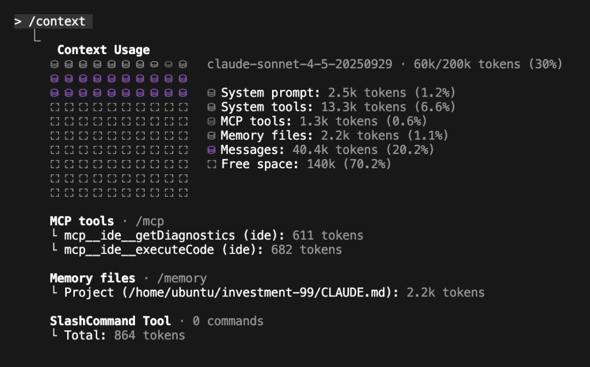

深度实战指南:精通每一个功能
作为业余爱好者,我每周会在虚拟机中运行它好几次来做业余项目,经常使用 --dangerously-skip-permissions
参数来快速实现脑海中的想法。从职业角度来说,我所在团队的一部分工作是为我们的工程团队构建 AI-IDE 规则和工具,这些工具每个月仅用于代码生成就要消耗数十亿的 token。
CLI 智能体领域越来越拥挤,在 Claude Code、Gemini CLI、Cursor 和 Codex CLI 之间,感觉真正的竞争是在 Anthropic 和 OpenAI 之间。但说实话,当我和其他开发者交流时,他们的选择往往归结于一些看似表面的东西——某个"幸运"的功能实现,或者他们就是喜欢的系统提示"感觉"。在这个阶段,这些工具都已经相当不错了。我也觉得人们经常过度关注输出风格或 UI。比如对我来说,"你说得对极了!"这种讨好式回复并不是一个值得注意的 bug;它只是一个信号,说明你过度参与了。总的来说,我的目标是"发射后不管"——委托任务、设定上下文,然后让它自己干活。我是通过最终的 PR 来评判工具,而不是它如何完成的。
在过去几个月坚持使用 Claude Code 后,这篇文章是我对 Claude Code 整个生态系统的反思总结。我们将涵盖我使用的几乎所有功能(同样重要的是,还有那些我不用的),从基础的 CLAUDE.md 文件和自定义斜杠命令,到强大的 Subagents、Hooks 和 GitHub Actions。这篇文章有点长,我建议把它当作参考资料而不是一口气读完。
CLAUDE.md 文件
要有效使用 Claude Code,你代码库中最重要的一个文件就是根目录的 CLAUDE.md。这个文件是智能体的"宪法",是它了解你特定代码仓库如何运作的主要真理来源。
如何对待这个文件取决于具体情况。对于我的业余项目,我让 Claude 随便往里面写什么都行。
对于我的专业工作,我们单体仓库的 CLAUDE.md 受到严格维护,目前大小为 13KB(我可以很容易地看到它增长到 25KB)。
它只记录 30%(任意阈值)或更多工程师使用的工具和 API(否则工具会记录在产品或库特定的 markdown 文件中)
我们甚至开始为每个内部工具的文档分配一个有效的最大 token 数,几乎就像向团队"出售广告位"一样。如果你不能简洁地解释你的工具,它就还没准备好放进 CLAUDE.md。
技巧和常见反模式
随着时间的推移,我们形成了一套强烈的、有主见的编写有效 CLAUDE.md 的理念。
从护栏开始,而不是手册
。你的 CLAUDE.md 应该从小处开始,基于 Claude 哪里做错了来进行文档化。
不要 @-文件引用文档
。如果你在其他地方有大量文档,在 CLAUDE.md 中 @-提及这些文件很诱人。这会通过在每次运行时嵌入整个文件来使上下文窗口膨胀。但如果你只是提到路径,Claude 经常会忽略它。你必须向智能体推销为什么以及何时阅读该文件。"对于复杂的...使用或如果遇到 FooBarError,请参阅 path/to/docs.md 以获取高级故障排除步骤。"
不要只说"绝不"
。避免只有否定性的约束,如"绝不使用 --foo-bar 标志"。当智能体认为它必须使用该标志时会卡住。始终提供替代方案。
将 CLAUDE.md 作为强制函数
。如果你的 CLI 命令复杂冗长,不要写几段文档来解释它们。那是在修补人类问题。相反,写一个简单的 bash 包装器,提供清晰、直观的 API 并记录它。尽可能缩短你的 CLAUDE.md 是简化代码库和内部工具的绝佳强制函数。
这是一个简化的快照:
# 单体仓库## Python- 始终...- 使用 <命令> 测试... 还有 10 条...## <内部 CLI 工具>... 10 个要点,专注于 80% 的用例...- <使用示例>- 始终...- 绝不 <x>,优先使用 <Y>对于 <复杂用法> 或 <e> 参见 path/to/<tool>_docs.md...最后,我们将此文件与 AGENTS.md 文件同步,以保持与我们工程师可能使用的其他 AI IDE 的兼容性。
要点
:将你的 CLAUDE.md 视为高级、精心策划的护栏和指针集合。用它来指导你需要在哪些方面投资更多 AI(和人类)友好的工具,而不是试图让它成为综合手册。
上下文管理
我建议在编码会话中至少运行一次 /context
来了解你如何使用你的 200k token 上下文窗口(即使有 Sonnet-1M,我也不相信完整的上下文窗口真的被有效使用了)。对我们来说,在单体仓库中的新会话基础成本约为 20k tokens(10%),剩下的 180k 用于进行更改——这可能很快就会填满。

我有三个主要工作流程:
/compact(避免)
:我尽可能避免使用它。自动压缩是不透明的、容易出错的,而且优化不佳。/clear + /catchup(简单重启)
:我的默认重启方式。我 /clear 状态,然后运行自定义的 /catchup 命令让 Claude 读取我 git 分支中所有更改的文件。"文档化并清除"(复杂重启)
:用于大型任务。我让 Claude 将其计划和进度转储到一个 .md 文件中,/clear 状态,然后通过告诉它阅读 .md 并继续来开始新会话。
要点
:不要相信自动压缩。使用 /clear 进行简单重启,使用"文档化并清除"方法为复杂任务创建持久的外部"内存"。
斜杠命令
我将斜杠命令视为常用提示的简单快捷方式,仅此而已。我的设置很简单:
/catchup
:我之前提到的命令。它只是提示 Claude 读取我当前 git 分支中所有更改的文件。/pr
:一个简单的帮助器,用于清理我的代码、暂存它并准备拉取请求。
在我看来,如果你有一长串复杂的自定义斜杠命令,你就创造了一个反模式。对我来说,像 Claude 这样的智能体的全部意义在于你可以输入几乎任何你想要的内容并得到有用的、可合并的结果。当你强迫工程师(或非工程师)学习一个新的、记录在某处的必要魔法命令列表才能完成工作时,你就失败了。
要点
:将斜杠命令用作简单的个人快捷方式,而不是替代构建更直观的 CLAUDE.md 和更好工具的智能体。
Subagents(子智能体)
从理论上讲,自定义子智能体是 Claude Code 在上下文管理方面最强大的功能。其理念很简单:一个复杂任务需要 X tokens 的输入上下文(例如,如何运行测试),累积 Y tokens 的工作上下文,并产生 Z token 的答案。运行 N 个任务意味着主窗口中有 (X + Y + Z) * N tokens。
子智能体的解决方案是将 (X + Y) * N 的工作外包给专门的智能体,它们只返回最终的 Z token 答案,保持主上下文的清洁。
我发现它们是一个强大的想法,但在实践中,自定义子智能体会产生两个新问题:
它们限制了上下文访问
:如果我创建了一个 PythonTests 子智能体,我现在已经向主智能体隐藏了所有测试上下文。它现在无法整体推理一个更改。它现在被迫调用子智能体只是为了知道如何验证自己的代码。它们强制执行人类工作流程
:更糟糕的是,它们强制 Claude 进入一个僵化的、人类定义的工作流程。我现在在指示它必须如何委托,而这正是我试图让智能体为我解决的问题。
我更喜欢的替代方案是使用 Claude 内置的 Task(...) 功能来生成通用智能体的克隆。
我将所有关键上下文放在 CLAUDE.md 中。然后,我让主智能体决定何时以及如何将工作委托给它自己的副本。这给了我子智能体的所有上下文节省优势,而没有缺点。智能体动态管理自己的编排。
会话管理
在简单层面上,我经常使用 claude --resume
和 claude --continue
。它们非常适合重启有问题的终端或快速重启旧会话。我经常 claude --resume
几天前的会话,只是为了让智能体总结它如何克服特定错误,然后我用它来改进我们的 CLAUDE.md 和内部工具。
更深入地说,Claude Code 将所有会话历史存储在 ~/.claude/projects/
中以利用原始历史会话数据。我有脚本对这些日志运行元分析,寻找常见的异常、权限请求和错误模式,以帮助改进面向智能体的上下文。
要点
:使用 claude --resume 和 claude --continue 重启会话并发掘埋藏的历史上下文。
Hooks(钩子)
Hooks 非常重要。我不在业余项目中使用它们,但它们对于在复杂的企业仓库中引导 Claude 至关重要。它们是确定性的"必须做"规则,补充了 CLAUDE.md 中的"应该做"建议。
我们使用两种类型:
提交时阻止钩子
:这是我们的主要策略。我们有一个 PreToolUse 钩子,它包装任何 Bash(git commit) 命令。它检查 /tmp/agent-pre-commit-pass
文件,只有在所有测试通过时我们的测试脚本才会创建该文件。如果文件缺失,钩子会阻止提交,强制 Claude 进入"测试和修复"循环,直到构建成功。提示钩子
:这些是简单的、非阻塞的钩子,如果智能体正在做一些不理想的事情,它会提供"发射后不管"的反馈。
我们故意不使用"写入时阻止"钩子(例如,在 Edit 或 Write 上)。在计划中途阻止智能体会让它困惑甚至"沮丧"。让它完成工作,然后在提交阶段检查最终完成的结果要有效得多。
要点
:使用钩子在提交时强制执行状态验证(提交时阻止)。避免在写入时阻止——让智能体完成其计划,然后检查最终结果。
规划模式
对于 AI IDE 的任何"大型"功能更改,规划都是必不可少的。
对于我的业余项目,我只使用内置的规划模式。这是在 Claude 开始之前与它对齐的一种方式,既定义如何构建某些东西,也定义"检查点",在这些点上它需要停下来向我展示其工作。经常使用这个功能可以建立一种强烈的直觉,即在不让 Claude 搞砸实现的情况下获得一个好计划需要什么最小上下文。
在我们的工作单体仓库中,我们已经开始推出基于 Claude Code SDK 构建的自定义规划工具。它类似于原生规划模式,但经过大量提示,以使其输出与我们现有的技术设计格式保持一致。它还开箱即用地强制执行我们的内部最佳实践——从代码结构到数据隐私和安全。这让我们的工程师可以像高级架构师一样"快速规划"一个新功能(或者至少这是宣传语)。
要点
:对于复杂更改,始终使用内置规划模式,在智能体开始工作之前就计划达成一致。
Skills 与 MCP
如果你一直关注我的帖子,你会知道我已经不再在大多数开发工作流程中使用 MCP,而是倾向于构建简单的 CLI(正如我在"AI Can't Read Your Docs"中论证的那样)。我对智能体自主性的心智模型已经演变为三个阶段:
单个提示
:在一个大型提示中给智能体所有上下文。(脆弱,不可扩展)。工具调用
:"经典"智能体模型。我们手工制作工具并为智能体抽象现实。(更好,但会创建新的抽象和上下文瓶颈)。脚本编写
:我们让智能体访问原始环境——二进制文件、脚本和文档——它即时编写代码与它们交互。
考虑到这个模型,Agent Skills 是显而易见的下一个功能。它们是"脚本编写"层的正式产品化。
如果像我一样,你已经倾向于使用 CLI 而不是 MCP,那么你一直在隐式地获得 Skills 的好处。SKILL.md 文件只是记录这些 CLI 和脚本并将它们暴露给智能体的一种更有组织、可共享和可发现的方式。
要点
:Skills 是正确的抽象。它们形式化了基于"脚本编写"的智能体模型,这比 MCP 代表的僵化的类 API 模型更强大和灵活。
Skills 并不意味着 MCP 已死(另见"Everything Wrong with MCP")。以前,许多人构建了糟糕的、上下文繁重的 MCP,其中包含数十个仅镜像 REST API 的工具(read_thing_a()、read_thing_b()、update_thing_c())。
"脚本编写"模型(现在由 Skills 形式化)更好,但它需要一种安全的方式来访问环境。对我来说,这是 MCP 新的、更集中的角色。
MCP 不应该是一个臃肿的 API,而应该是一个简单、安全的网关,提供一些强大的高级工具:
download_raw_data(filters…)
take_sensitive_gated_action(args…)
execute_code_in_environment_with_state(code…)
在这个模型中,MCP 的工作不是为智能体抽象现实;它的工作是管理身份验证、网络和安全边界,然后让开。它为智能体提供入口点,然后智能体使用其脚本和 markdown 上下文来完成实际工作。
我仍在使用的唯一 MCP 是 Playwright,这很有道理——它是一个复杂的、有状态的环境。我所有的无状态工具(如 Jira、AWS、GitHub)都已迁移到简单的 CLI。
要点
:使用充当数据网关的 MCP。给智能体一两个高级工具(如原始数据转储 API),然后它可以编写脚本来对抗。
Claude Code SDK
Claude Code 不仅仅是一个交互式 CLI;它也是一个强大的 SDK,用于构建全新的智能体——无论是编码任务还是非编码任务。我已经开始将它作为我大多数新业余项目的默认智能体框架,而不是 LangChain/CrewAI 等工具。
我以三种主要方式使用它:
大规模并行脚本编写
:对于大规模重构、错误修复或迁移,我不使用交互式聊天。我编写简单的 bash 脚本,并行调用 claude -p "in /pathA change all refs from foo to bar"
。这比试图让主智能体管理数十个子智能体任务要更具可扩展性和可控性。构建内部聊天工具
:SDK 非常适合为非技术用户将复杂流程包装在简单的聊天界面中。比如一个安装程序,在出错时回退到 Claude Code SDK 来为用户修复问题。或者一个内部"v0-at-home"工具,让我们的设计团队在我们的内部 UI 框架中快速编码模拟前端,确保他们的想法是高保真的,代码在前端生产代码中更直接可用。快速智能体原型设计
:这是我最常见的用途。它不仅仅用于编码。如果我对任何智能体任务有想法(例如,使用自定义 CLI 或 MCP 的"威胁调查智能体"),我会使用 Claude Code SDK 快速构建和测试原型,然后再投入到完整的部署脚手架中。
要点
:Claude Code SDK 是一个强大的通用智能体框架。将它用于批处理代码、构建内部工具以及在使用更复杂的框架之前快速原型化新智能体。
GitHub Actions
Claude Code GitHub Action(GHA)可能是我最喜欢也最被低估的功能之一。这是一个简单的概念:只需在 GHA 中运行 Claude Code。但这种简单性正是它如此强大的原因。
它类似于 Cursor 的后台智能体或 Codex 托管的 Web UI,但更可定制。你可以控制整个容器和环境,为你提供更多的数据访问,更重要的是,比任何其他产品提供的沙箱和审计控制都要强得多。此外,它支持所有高级功能,如 Hooks 和 MCP。
我们用它来构建自定义的"从任何地方创建 PR"工具。用户可以从 Slack、Jira,甚至 CloudWatch 警报触发 PR,GHA 将修复错误或添加功能并返回一个完全测试过的 PR。
由于 GHA 日志是完整的智能体日志,我们有一个运营流程定期在公司层面审查这些日志,查找常见错误、bash 错误或不一致的工程实践。这创建了一个数据驱动的飞轮:错误 -> 改进 CLAUDE.md / CLI -> 更好的智能体。
$ query-claude-gha-logs --since 5d | claude -p "看看其他 claude 在哪里卡住了并修复它,然后提交一个 PR"要点
:GHA 是将 Claude Code 运营化的终极方式。它将它从个人工具转变为工程系统的核心、可审计和自我改进的部分。
settings.json
最后,我有一些特定的 settings.json 配置,我发现它们对于业余和专业工作都是必不可少的。
HTTPS_PROXY/HTTP_PROXY
:这对调试很有用。我会用它来检查原始流量,看看 Claude 到底发送了什么提示。对于后台智能体,它也是细粒度网络沙箱的强大工具。MCP_TOOL_TIMEOUT/BASH_MAX_TIMEOUT_MS
:我会提高这些值。我喜欢运行长而复杂的命令,默认超时通常过于保守。我老实说不确定现在 bash 后台任务存在后是否还需要这个,但我保留它以防万一。ANTHROPIC_API_KEY
:在工作中,我们使用企业 API 密钥(通过 apiKeyHelper)。它将我们从"按席位"许可转变为"基于使用量"定价,这对我们的工作方式来说是一个好得多的模式。它考虑了开发人员使用的巨大差异(我们看到工程师之间有 1:100 倍的差异)。
它让工程师可以尝试非 Claude-Code 的 LLM 脚本,所有这些都在我们单一的企业账户下。
"permissions"
:我偶尔会自我审计我允许 Claude 自动运行的命令列表。
要点
:你的 settings.json 是进行高级定制的强大场所。
结论
内容很多,但希望你觉得有用。如果你还没有使用像 Claude Code 或 Codex CLI 这样的基于 CLI 的智能体,你可能应该使用。这些高级功能很少有好的指南,所以学习的唯一方法就是深入研究。
https://blog.sshh.io/p/how-i-use-every-claude-code-feature[1]
参考资料
[1]
https://blog.sshh.io/p/how-i-use-every-claude-code-feature: https://blog.sshh.io/p/how-i-use-every-claude-code-feature